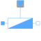

VariableAdmittanceSingle phase variable admittance |

|
Information
This information is part of the Modelica Standard Library maintained by the Modelica Association.
The admittance model represents a parallel connection of a conductor and either a capacitor or inductor.

The linear admittance connects the complex voltage v with the
complex current i by v*Y = i.
The admittance Y_ref = G_ref + j*B_ref is given as complex input signal, representing the
resistive and reactive component of the input admittance. The resistive
component is modeled temperature dependent, so the real part G_actual = real(Y) is determined from
the actual operating temperature and the reference input conductance real(Y_ref).
The reactive component B_actual = imag(Y)
is equal to imag(Y_ref) if frequencyDependent = false.
Frequency dependency is considered by frequencyDependent = true, distinguishing two cases:
- (a)
imag(Y_ref) > 0: capacitive case - The actual susceptance
B_actualis proportional tof/f_ref - (b)
imag(Y_ref) < 0: inductive case - The actual susceptance
B_actualis proportional tof_ref/f
Note
A zero crossing of the real or imaginary part of the admittance signal Y_ref could cause
singularities due to the actual structure of the connected network.
See also
Resistor, Conductor, Capacitor, Inductor, Impedance, Admittance, Variable resistor, Variable conductor, Variable capacitor, Variable inductor, Variable impedance
Parameters (6)
| useHeatPort |
Value: false Type: Boolean Description: =true, if heatPort is enabled |
|---|---|
| T |
Value: T_ref Type: Temperature (K) Description: Fixed device temperature if useHeatPort = false |
| T_ref |
Value: 293.15 Type: Temperature (K) Description: Reference temperature |
| alpha_ref |
Value: 0 Type: LinearTemperatureCoefficient (¹/K) Description: Temperature coefficient of resistance (R_actual = R_ref*(1 + alpha_ref*(heatPort.T - T_ref)) |
| frequencyDependent |
Value: false Type: Boolean Description: Consider frequency dependency, if true |
| f_ref |
Value: 1 Type: Frequency (Hz) Description: Reference frequency, if frequency dependency is considered |
Connectors (4)
| pin_p |
Type: PositivePin Description: Positive quasi-static single-phase pin |
|
|---|---|---|
| pin_n |
Type: NegativePin Description: Negative quasi-static single-phase pin |
|
| heatPort |
Type: HeatPort_a Description: Conditional heat port |
|
| Y_ref |
Type: ComplexInput Description: Variable complex admittance |
Components (2)
| v |
Type: ComplexVoltage Description: Complex voltage |
|
|---|---|---|
| i |
Type: ComplexCurrent Description: Complex current |
Used in Components (1)
|
Modelica.Electrical.QuasiStationary.MultiPhase.Basic
Multiphase variable admittance |